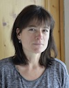

Jocelyne Kocher
Sage-femme - région Sud Fribourgeois
Rue du Château 26, 1627 Vaulruz
079 418 68 07, kocher.jocelyne@gmail.com
Un peu de moi….
Sage-femme depuis plus de vingt ans après avoir travaillé comme nurse diplômée en clinique, ma pratique n’a cessé d’évoluer et de s’enrichir au cours des années.
Après quelques années dans un petit hôpital suisse, j’ai travaillé comme bénévole pendant quatre ans à l’Hôpital National Yalgado de Ouagadougou au Burkina Faso; cette expérience, particulièrement belle et riche quoique difficile, m’a fait réaliser toute la dimension de ma profession et l’importance de l’accompagnement personnalisé des familles, de l’accueil fait à l’enfant dès la grossesse .
Une fois rentrée en Suisse, je me suis installée comme sage-femme indépendante; c’est ainsi que j’ai eu le privilège d’accompagner des accouchements en maison de naissances
dès 1997, d’abord à Châtel-St-Denis, puis à Aigle, ainsi qu’à domicile, et en milieu hospitalier en tant que sage-femme agréée à l’Hôpital de Riaz pendant 5 ans, ou lors de remplacements dans ce même hôpital. Chaque naissance est unique, précieuse, différente, et je m’efforce de répondre aux attentes des familles, de leur proposer d’établir avec eux un projet de naissance qui leur corresponde.
Parallèlement, je continue à me former en aromathérapie et en phytothérapie.
Maman de quatre grands garçons, je suis aussi très sensible à la difficulté de devenir parents et propose un soutien attentif et personnalisé en cas de besoin.